Includes 3 content items, starting with Section 1: Readiness, Section 2: Notetaking, Section 3: Remembering Information.
Module Content
Lesson sequence
1
Reading
Module 3: Understanding the Learning Process
3.1 Readiness for Learning
In this section you are going to explore...
Are you ready to learn?
Anticipatory Techniques
Are You Ready to Learn?
As you enter your class, be it an online course, self-paced course or an actual classroom; you need to be ready to learn. How is your mindset? Mindsets are beliefs - beliefs about yourself and your basic qualities - like your intelligence, your talents, your personality. Do you have more of a fixed mindset or growth mindset?
People with fixed mindsets believe that their traits are just givens. That they have a certain amount of intelligence and talent and nothing can change that. You might hear people with fixed mindsets say things like “I’m a terrible singer” or “I’m no good at math”. The misfortune here is that people just haven't taken the time to practice - to work through and puzzle over something until they have acquired a new skill. And thus, they dismiss their ability to say that they simply “can’t” do something. People with a growth mindset see their qualities as things that can be developed through their dedication and effort. They believe that challenges and learning are opportunities, and that failure is an opportunity for growth.
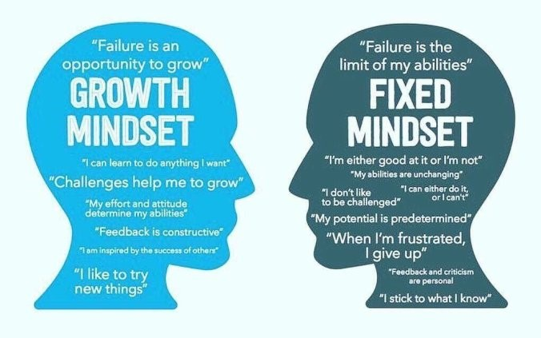
Watch the following video and think about how the idea of ‘Not Yet’ relates to having a Growth Mindset
Before getting into this module about preparing to learn, you need to evaluate YOUR current readiness to learn.
In the remainder of Section 1, you are going to learn about several different techniques to self-monitor how well you are learning and how effective your learning is. Then you are going to develop a plan to monitor your own learning, determine how effective your learning is, and how you can improve.
Anticipatory Techniques
Before we start to learn, it’s important to set ourselves up for success. Part of ensuring our success is to use new terms.
Anticipatory techniques that help you retain and understand information better are:
Engaging Prior Knowledge - What do I already know about this subject? Make a list or write a short summary of everything that you already know about this topic.
Questioning - Make a list of questions you have about this topic. What are you curious about? What confuses you about this topic?
Make Predictions - Write a list of predictions that you have about the reading.
Identify a Purpose - Think about the reason that you are reading. What kinds of information are you looking for? By identifying the purpose of your reading, your brain will automatically begin to look for cues that match up with your purpose.
2
Reading
Module 3: Understanding the Learning Process
3.2 Developing Note-Taking Skills
In this section you are going to review...
Note-Taking Strategies
We have examined a number of different strategies for note-taking in Learning Strategies 15 and 25. The following material will summarize some of the main ideas associated with note-taking.
Take a moment to reflect on your note-taking strategies and figure out whether there are improvements that can be made to make your note-taking more effective. After all, having good notes will play a very important role in your final grades. Get used to creating your notes in the best possible way that suits you and follows these best practices. These skills will stand by you, not only this year but next year too and indeed going forward into your future academic and professional life.
When taking notes in class, do not try to translate every single word the teacher says, instead, pick up the main points. This will allow you to remember important information.
Before you get into section 2 and learn about note-taking skills, you need to evaluate YOUR current note-taking skills - why do you take notes? How useful are these notes?
Take some time to watch the following video Taking Notes: Crash Course Study Skills. It is a fantastic, quick paced overview of taking notes - whether you are using a laptop or pen & paper!
Note-Taking Strategies
There are many different ways to take notes. Below are descriptions and examples of the 4 most popular note-taking strategies.
#1 - The Cornell Method:
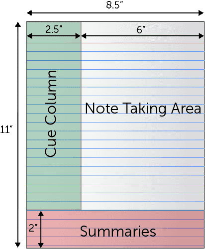
The Cornell Method has been and remains one of the most popular note-taking strategies amongst students today. The technique can be seen below.
You simply divide up your notes into 3 sections. The right column is home to the general area. This is where you keep the most important ideas that the teacher has covered during class. It is important that you try to summarize as much as possible and to be smart when note-taking.
The left area serves to complement the general area. Writing notes in the margins helps us understand and relate each part of our notes. This section may develop during the class itself or at the end of it.
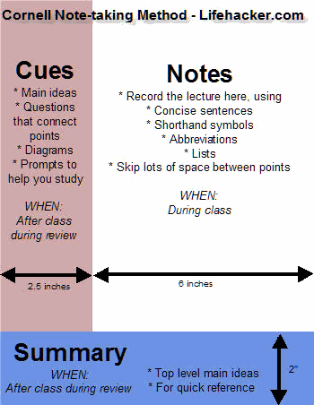
The last section labelled ‘summary’ should be left blank during class as it is intended for use when you are reviewing/ studying the class notes. This lessens the need to keep up with the teacher’s delivery and to write fast. You should try to develop a short summary of key points in this section for greater reflection of the class notes.
#2 - The Split Page Method:
This method has similarities with the Cornell Method however it is still a principle unto itself. The idea is that you divide the page vertically into two sections. A main idea and secondary ideas.
The idea is that, while you are taking notes, you are organizing everything simultaneously. This method may require some adjustment at first but in the long run, it will help you to better optimize your study time when using your notes.
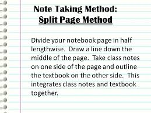
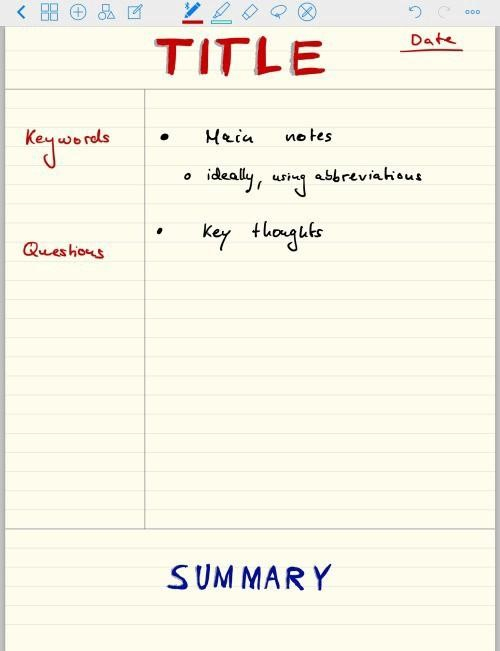
#3 - Visual Aids
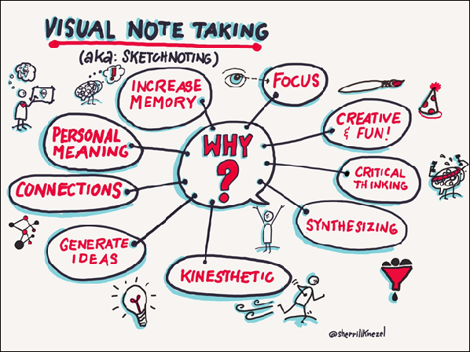
This method is based on the use of visual aids to improve how the brain processes information. It involves using pictures, graphs, diagrams, etc. Rather than writing long paragraphs of information, our brain follows the information sequentially. The use of colours and other visual elements such as different sized letters, also known as supernotes, favours the user. Because of this, Mind Maps are becoming one of the most widespread methods of note-taking. These resources make it possible to develop ideas and connections easily in a visual environment.
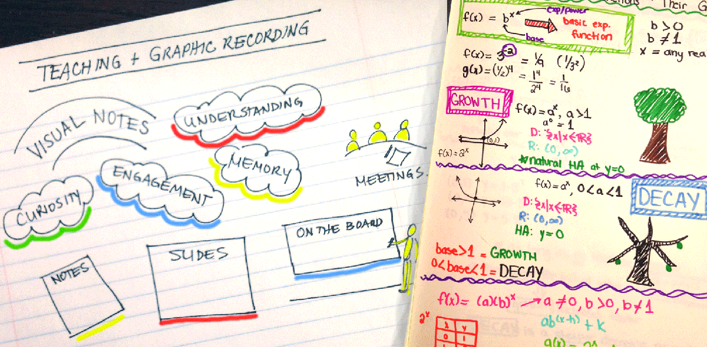
Tips for Visual Learners
Draw pictures, mind maps, flowchartys, timelines, etc. as part of your note taking
Spend extra time looking over Power Point slides and outlines and flowcharts in your books. Recreate these visual aids when you read and study
Use underlining, highlighting or different colored pens to visualize differences among notes and readings
#4 Symbols and Abbreviation
No matter which method you use to take notes, there will be times when you cannot keep pace with the class and your wrist will begin to hurt you from writing. Therefore, it is important that you develop your own language of symbols so that you can write more with little effort. Once the class is over, you can always “translate” the notes that you took during class. This will leave you with your own ‘language’ of notes.
Sample common symbols and abbreviations:
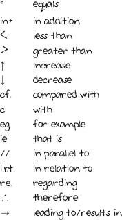
These four techniques are designed to help you take more effective notes at home, in lecture halls or anywhere. However, it is important that you adapt to your own style and stick with the ones that will bring you success.
3
Reading
Module 3: Understanding the Learning Process
3.3 Consolidating and Remembering Information
Learning and Memory
Memory Strategies
Reading Strategies
Before you get into Section 3 and learn different methods of consolidating and retaining information, you need to evaluate YOUR current study techniques?
We all use strategies throughout our day to remember the variety of facts and ideas we need to retain. Think about how you remember something:
When you want to remember a phone number, do you repeat it to yourself several times until you get the whole number dialled?
When you get to the grocery store and want to remember four items, do you hold up four fingers to cue yourself to remember?
When someone asks you about a concert you went to a few years ago, how do you call up the memory? Some people may first think of music. Others may recall the singers' outfit. Still others may recall the auditorium. Once you have a hook into the memory, each recall seems to trigger additional aspects of the event.
Strategy use forms a critical part of our learning experience. Strategies help us organize information into patterns and encourage purposeful learning. Our brains are selective. Brains tend to remember information that forms a memorable pattern.
Learning and Memory
New learning enters the brain through what is known as our sensory memory, which lasts approximately 3-4 seconds. From here the new learning travels to short-term memory, where it remains for approximately 18 seconds. If no rehearsal or practice sessions follow, the new learning simply becomes lost memory. New learning may also be forgotten or lost from short-term memory if it is not rehearsed enough. It takes at least eight rehearsal sessions for advanced learners to retain new information. 20 rehearsal sessions are needed for average learners, and as many as 90 rehearsal strategies may be required for at-risk or students with special needs.
In Learning Strategies 15 and 25 we explored many aspects of the brain and memory. You will recall that to remember something your brain goes through the following process:
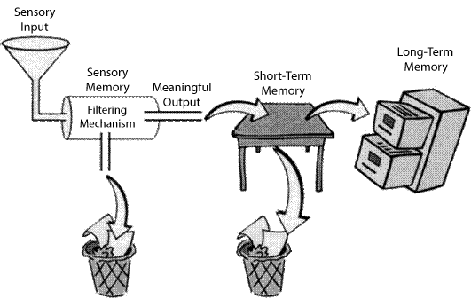
Did you know that memory can improve by practicing and using effective strategies?
Memory Strategies
The RIP Toolbox for Memory
This toolbox contains the three key strategies to help memory: repetition, imagery, and patterns (RIP). Many students believe that just reading something is enough. Often, that is not sufficient. We remember something best when it is organized and rehearsed.
What if, before each test, you created a memory plan. The same way a pilot would hand in a flight plan. In other words, how are you going to go about getting stuff into and out of your memory?
The following two strategies are general reminders to encourage you to use a process when working to remember information. Each strategy is represented by a word or phrase wherein each letter represents one of the steps.
R SOW V
TRAP
R
Relax & Concentrate People who are tense and under stress are prone to memory lapses
T
Translate Translate the information or ideas into your own words
S
Slowdown Rushing or being impulsive reduces attention to the information or task
R
Repeat Rehearse the information immediately and relate the new to the old ideas
O
Organize Organize the information or organize locations; keep important items in a designated place
A
A Picture A picture is worth 1000 words; visualize the information
R
Write down or repeat A small notebook, calendar, tape recorder or PDA can be very useful
T
Practice The more information is practiced, the better will be the recall
V
Visualize Associate an image with the information to recall
Repetition
Multiple repetitions of the information provide rehearsal, but doing so may bore you. When bored, the brain can go into a pattern similar to the "screen saver" mode on your computer. You may not pay attention to what you are repeating. Therefore, using strategies with humour, movement, songs, and other forms of novelty are critical in enhancing the value of the repetition.
As an example, consider the task of learning five state capitals. Following are several different activities to use in memorizing the associations. (Richards, 2003, p. 191).
Practice saying the capital and the state together, as in "Sacramento, California; Columbus, Ohio" etc. This helps create an association between the two words.
Develop silly mnemonics to help remember which capital goes with the state. For Ohio, sketch a picture of a person saying, "oh, hi, oh Columbus." This associates the word "Columbus" with the word "Ohio."
Practice matching flashcards of capitals to state names, and states to capitals.
Perform a motor activity such as jumping on a small trampoline or playing catch while saying the city in response to hearing the state, or vice versa (see figure 2).
Create a rap or jingle that repeats each state and its capital
Mnemonics
Four Principles for Making Memorable Mnemonics
Selection: Select knowledge that lends itself to be turned into a mnemonic.
For example, serial information (like planets in order of proximity to the sun) especially lends itself to acronym mnemonics; so does numbered information (five pillars, seven continents, twelve nerves, etc)
Cue: Use the first letters as the ‘raw material’ for cues.
Chunk: Create a vivid, memorable phrase that reduces the content to a single chunk.
Rehearse: practice converting the mnemonic to the content and the content to the mnemonic.
Examples of Mnemonics
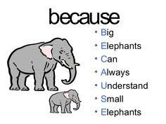
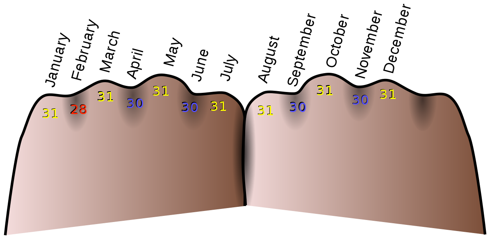
Factors Affecting Your Ability to Remember
There are a variety of techniques and strategies that can help you to remember what you learn. As well, there are situations that can inhibit/hinder your ability to learn and remember. There are many things that affect the way we remember information. These include:
Hearing acuity
Hearing acuity Our ability to accurately hear the initial message will impact on our ability to process it accurately. When an auditory processing difficulty is suspected, it is important to rule out the presence of a hearing loss.
Attention
If we are not paying attention, we are less likely to remember what has been said. When we are already knowledgeable about a topic, we tend to integrate new information into what is known.
Interest
It is easier to learn new information if we are interested in it
Message complexity
The simpler the message, the easier it is to remember. Simpler does not always mean shorter. It means the language used to convey the message is easier to understand. Length of the information The longer a piece of information is, the more difficult it is to remember. If the auditory memory is overloaded, the full message will not be processed and stored.
Speed
If it is presented very quickly, it is difficult to register all that is said. If information is presented too slowly, we sometimes forget bits and lose the point of what is said. Pauses between key pieces of information help us remember each piece presented.
Energy
The more tired we are, the harder it is to concentrate on and remember auditory information. It is more likely that we will forget the information.
Predictability
The more predictable information is, the easier it is to remember, because it links into known information.
Emotional wellbeing
A students capacity to focus on auditory information is in part related to their emotional wellbeing.
Physical wellbeing
The ‘unwellness experience’ contributes to inattention and therefore our ability to remember the communication.
Reading
Let’s consider the process of effective textbook reading by viewing a short youtube video called “How to Read Your Textbooks” by Clarissa.
How to Read Your Textbooks
Six Reading Myths
Myth #1
I HAVE TO READ EVERY WORD: Many of the words used in writing grammatically correct sentences actually convey no meaning. If, in reading, you exert as much effort in conceptualizing these meaningless words as you do important ones, you limit not only your reading speed but your comprehension as well. A great way to distill meaning out of a paragraph is to take brief notes.
Myth #2
READING ONCE IS ENOUGH: For most students in most subjects reading once is not enough. Instead, skim once as rapidly as possible to determine the main idea and to identify those parts that need careful reading. Reread more carefully to fill the gaps in your understanding. Good reading is selective reading. It involves selecting those sections that are relevant to your purpose in reading. Take a few seconds to quiz yourself on the material you have just read and then review those sections that are still unclear or confusing to you. Take notes. The most effective way of spending each study hour is to devote as little time as possible to reading and as much time as possible to testing yourself, reviewing, organizing and relating the concepts and facts, mastering the technical terms, formulas, etc., and thinking of applications of the concepts - in short, spend your time learning ideas, not painfully processing words visually.
Myth #3
IT IS SINFUL TO SKIP PASSAGES IN READING: Many students feel that it is somehow sinful to skip passages in reading and to read rapidly. The abundance of books and printed matter brought about by the information explosion creates a reading problem for everyone. You must actively decide what is important. The idea that you cannot skip, but have to read every page is left over from when we first learned how to read. As a result, students feel guilty if they find a novel dull and put it down before finishing it. Forget the guilt! Read and learn what you need to.
Myth #4
MACHINES ARE NECESSARY TO IMPROVE MY READING SPEED: The fact is that what most people need to improve is reading efficiency - that is, reading with a purpose, practicing skimming, looking for main ideas so that you can read them more carefully, and taking notes. If physical reading speed remains a concern, the best and most effective way to increase it is simple: consciously force yourself to read faster. Reading speed and efficiency is affected by the reading environment. Be sure your reading area is free of any distractions, has good lighting, & ventilation. Give yourself every advantage. If you are going to read, prepare things so you can read unhindered.
Myth #5
IF I SKIM OR READ TOO RAPIDLY MY COMPREHENSION WILL DROP: Research shows that there is little relationship between rate and comprehension. Some students read rapidly and comprehend well, others read slowly and comprehend badly. Whether you have good comprehension depends on whether you can extract and retain the important ideas from your reading, not on how fast you read. If you can do this, you can also increase your speed. If you "clutch up" when trying to read fast or skim and worry about your comprehension, it will drop because your mind is occupied with your fears and you are not paying attention to the ideas that you are reading. If you concentrate on your purpose for reading - e.g. Locating main ideas, and the details, and force yourself to stick to the task of finding them quickly - both your speed and comprehension should increase. Your concern should be not with how fast you can get through a chapter, but with how quickly you can locate the facts and ideas that you need.
Reading Strategies:
Reading strategies is the broad term used to describe the planned and explicit actions that help readers translate print to meaning. Strategies that improve decoding and reading comprehension skills benefit every student.
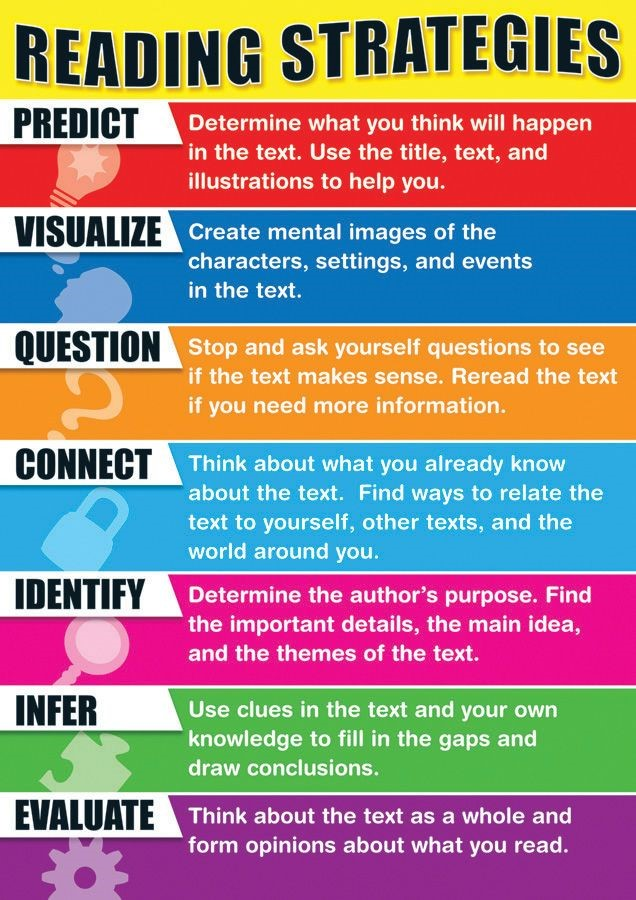
Congratulations! You have completed Module 3 of this Learning Strategies course.